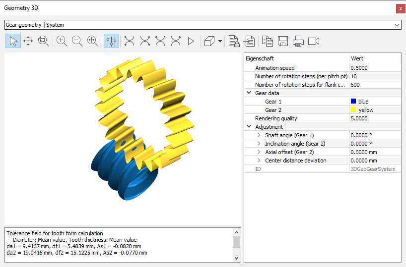

|
|
|


检查接触印痕
2D 图形（见“啮合”章节）中显示的碰撞检查仅可有限地用于交错轴斜齿轮，因为它仅适用于轴交角为 90° 的情况，且不能提供足够信息量的结果。某些齿向修形未被考虑，啮合仅显示在轴向剖面（齿轮 1 位于轴向剖面中部）和横向剖面（齿轮 2）中。
一种更好的检查啮合的方法是使用3D模型。3D模型包含所有修改，并可以显示任意轴向交角下的情况。可使用"skin model" 3D模型类型来模拟接触情况，然后使用啮合动画仔细检查。在这种情况下，单击适当的函数按钮，轻柔地将一个齿轮与另一个齿轮啮合，直到齿轮表面之间的接触形成接触印痕。然后，运行啮合动画。为确保齿轮之间不重叠过多，我们建议在属性中将旋转步数设置为100到500或更高。

图19.6: 蜗杆齿面的接触印痕
Checking the contact pattern
The collision check shown in the 2D graphic (see chapter Meshing) can only be used to a limited extent for crossed helical gears, because it only works for a shaft angle of 90° and does not supply informative enough results. Some of the flank line modifications are not taken into account, and meshing is only displayed in the axial section, middle for Gear 1 and in the transverse section for Gear 2.
A better method for checking meshing is to use a 3D model. A 3D model includes all modifications and can be displayed for any axial crossing angle. You can use the "skin model" 3D model type to simulate a contact situation and then check it carefully using the meshing animation. In this case, click the appropriate function button to gently engage one gear with the other until the contact between the gear surfaces forms a contact pattern. Then, run the meshing animation. To ensure that the gears do not overlap too much, we recommend to set (in Properties) the number of rotation steps to between 100 and 500 or higher.
Figure 19.6: Contact pattern of a worm toothing